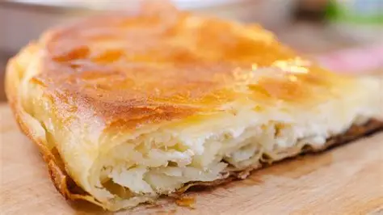

Burek Recipe

Description
Burek is a traditional pastry made with thin flaky dough (often filo) and
filled with a variety of ingredients, including meat, cheese, spinach, or
potatoes. It is a staple in the Balkans, particularly in countries like
Bosnia, Serbia, and Croatia, where it is often enjoyed as a breakfast item
or snack. Burek can be prepared in different shapes, such as triangular or
coil-shaped, and is typically baked until crispy and golden. It is often
served with yogurt or sour cream, making it a popular choice for a
balanced meal
Ingredients
- 1 pound lean ground beef
- 1 tablespoon ground allspice
- 1 tablespoon paprika
- salt and freshly ground pepper to taste
- 1 medium potato, finely chopped
- 1 medium onion, chopped
- 16 sheets phyllo dough, thawed
- ¼ cup melted butter
Steps
- Preheat the oven to 400 degrees F (200 degrees C).
-
Cook and stir ground beef in a large nonstick skillet over medium heat
until browned and crumbly, 5 to 7 minutes; drain fat. Stir in allspice,
paprika, salt, and pepper. Transfer mixture to a large bowl and stir in
potato and onion.
-
Stack two sheets phyllo dough on a work surface. Spoon 1/8 of the beef
mixture down one long edge of the stack, then roll phyllo around filling
into a tube. Coil the tube into a snail shape and place onto an
ungreased baking sheet. Repeat to make seven more burek, placing
finished coils up against one another to keep them from unrolling. Brush
melted butter over the tops.
- Bake in the preheated oven until golden brown, 20 to 30 minutes.
Home